位置代理指标，非像素实例识别。非闭环SR。源正射RGB图册仅保存在服务器。
| 方法 | R20 | NE(m) | 纠正/破坏 | 净收益 |
|---|---|---|---|---|
| geometry_relation | 70.088% | 20.3788 | 0/0 | +0 |
| old_current | 69.642% | 20.5566 | 27/61 | -34 |
| old_whole | 69.025% | 20.6640 | 145/226 | -81 |
| old_multi | 68.894% | 20.6549 | 168/259 | -91 |
| new_current | 69.734% | 20.5781 | 33/60 | -27 |
| new_whole | 69.497% | 20.6925 | 154/199 | -45 |
| new_multi | 69.563% | 20.4100 | 109/149 | -40 |
| new_multi_PGVB_only | 68.474% | 20.8806 | 150/273 | -123 |
| new_multi_zero | 70.232% | 20.2356 | 79/68 | +11 |
| new_multi_shuffle | 70.232% | 20.2808 | 116/105 | +11 |
| new_current_zero | 69.904% | 20.5336 | 27/41 | -14 |
| new_current_shuffle | 69.799% | 20.5403 | 30/52 | -22 |
This is a small one-story building with a white gabled roof. There are blue, green and white tents in the green area behind this building. On the other side of this building are 3 buildings with red pyramid roofs, these buildings are on the side of wellington road.
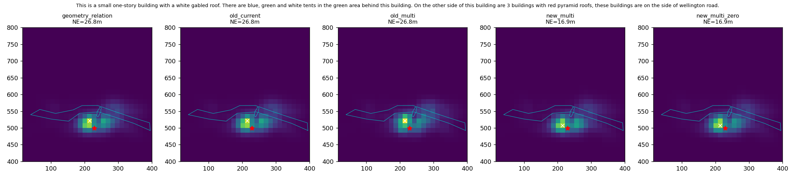
The brown house on the right behind the parking lot behind the row of trees along Wellington Road.
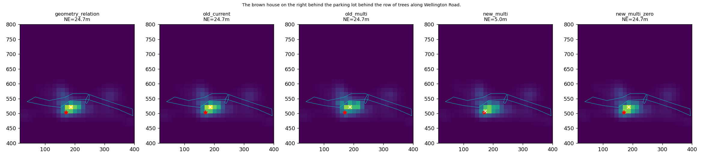
Two multi-colored white and brown houses with brown roofs red-lined, off Wellington Road across the street from a parking lot
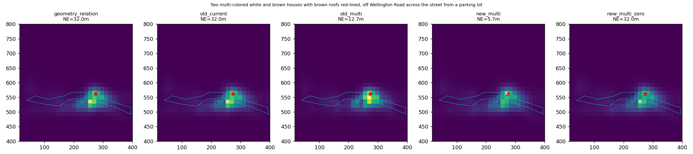
A black car next to a red car in front of a brown building with a gray roof, that has a white car next to that, parked behind the St Teresa's court building in front of the railroad
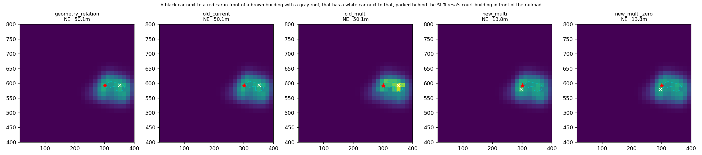
The third building with grey roof and brown wall situated at the right side of the road named Willmore road.
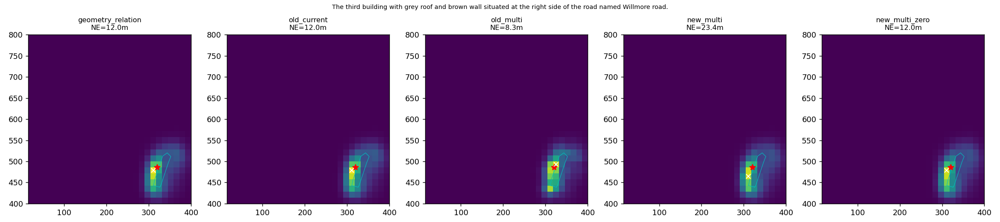
A brown house with two trees in the front and a parking lot to the left along Grosvenor road.
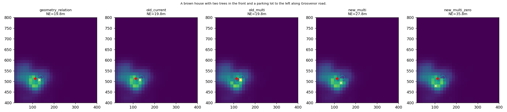
A multi-colored Brown House with a dark brown roof that is missing its front wall, across from a red car off Grosvenor Road, near the edge of the map
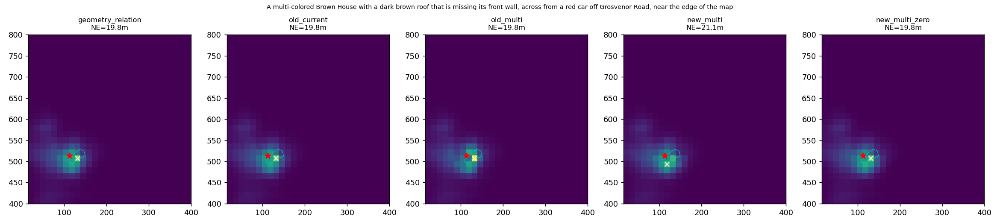
The black car to the right of a red building at the far right of the parking lot behind the long row of green trees along Wellington Road.
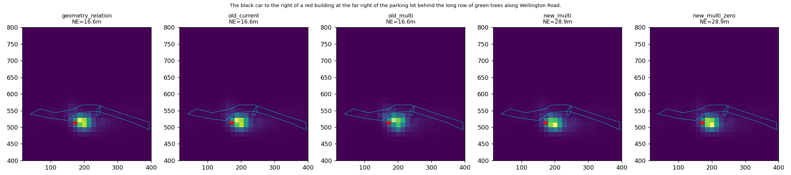
The large blue and white building that goes around the huge parking lot with the The Gym, Nike Factory Store and The Food Warehouse.
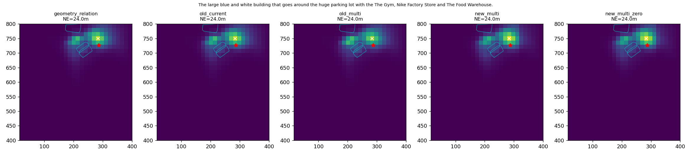
A beige and brown house with a dark gray roof cut off by the edge of the map with a white car in front of it off Grosvenor Road
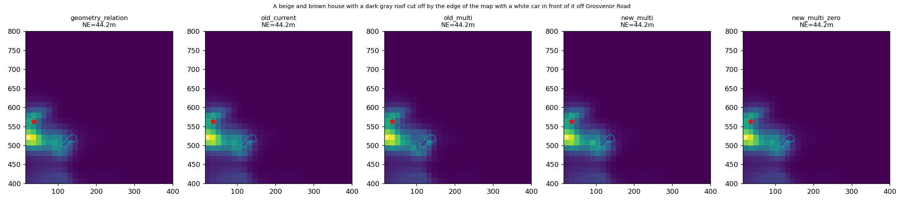
A big building with grey roof situated behind the St Teresa of the Child Jesus Catholic Church. A blue car and a grey car is parked close to the building. The railway track is behind the building.
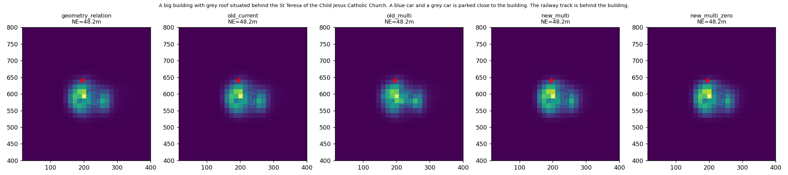
This is a building with a gray roof located behind St. Teresa of the Child Jesus Catholic Church. There are a couple of cars parked nearby this building. One is blue and one is white.
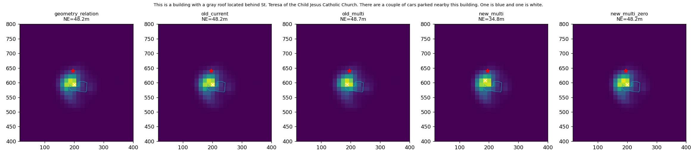